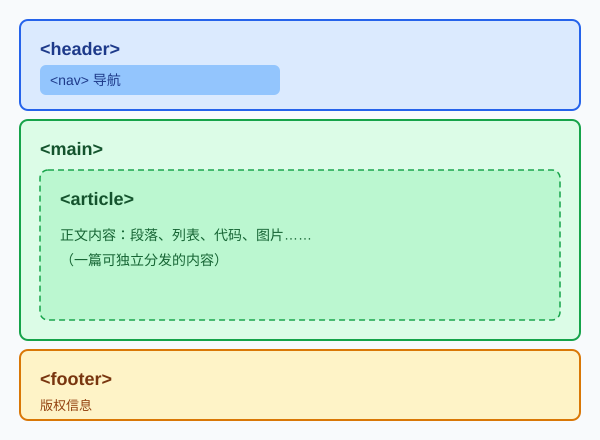

语义化 HTML：写给刚开始写网页的你
刚开始写网页的时候，我们常常会用 <div> 搭出整个页面：导航是 <div>，文章是 <div>，版权栏还是 <div>。页面看起来没错，但浏览器之外的"读者"却什么都读不懂。
什么是语义标签
语义标签就是那些自带含义的元素——标签名本身就说明了它是页面里的哪一部分。常用的有：
<header>：页头或区块头，放站名、导航<nav>：导航区域<main>：页面主要内容，一页只应有一个<article>：一篇可以独立分发的完整内容<section>：文章内的主题分区<footer>：页脚或区块脚，放版权、联系信息
语义化对谁重要
语义标签不是可有可无的装饰，它同时服务于三类读者：
- 屏幕阅读器用户：视障用户靠读屏软件"听"网页。有了
<nav>，他们可以一键跳到导航；有了<article>，他们可以跳过页头直接听正文。 - 搜索引擎爬虫：爬虫没有眼睛，只能读标签结构。结构清晰的页面更容易被理解、被收录，排名也会受益。
- 未来的你：三个月后回来看代码，
<footer>比"第五个<div>"好懂一百倍。
一个常见误区：div 不是不能用
语义化不等于彻底消灭 <div>。<div> 是没有含义的通用容器，当你找不到合适语义标签时，用它反而更诚实。W3C 规范里有一句被反复引用的话：
Authors are strongly encouraged to view the div element as an element of last resort, for when no other element is suitable.
— W3C HTML 规范：div 元素章节
翻译过来：请把 div 当作最后的备选——只有当没有其他元素合适时才使用它。
动手改造：同一页面的两种写法
下面是一个页面骨架的对比。先用 <div> 写：
<body>
<div id="top">导航</div>
<div id="content">正文</div>
<div id="bottom">版权</div>
</body>再用语义标签写同样的结构：
<body>
<header>
<nav>导航</nav>
</header>
<main>
<article>正文</article>
</main>
<footer>版权</footer>
</body>改完之后的页面结构长这样：

总结
语义化 HTML 不是玄学，就是用对的标签做对的事：
- 页面骨架用
<header>、<main>、<footer> - 独立内容用
<article>，主题分区用<section> - 引用别人说的话用
<blockquote>+<cite> - 找不到合适标签时才用
<div>
想查某个标签怎么用，最可靠的参考是 MDN 的 HTML 元素参考；想系统了解标签的取舍，可以读 W3C 规范的分区章节。